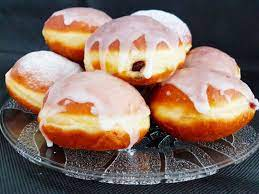

Schabowy z ziemniakami i surówką
Składniki:
- 1kg mąki tortowej
- 1/2 litra mleka
- 1 łyżka masła
- kostka drożdzy
- 6 łyżek cukru
- litr oleju do smażenia
Sposób przygotowania:
- Rozcieramy drożdże z żółtkami. Dodajemy cukier, mleko.
- podgrzewamy na ogniu z masłem. Letnie mleko łączymy z drożdżami.
- żółtkiem i kilogramem mąki. Wyrabiamy do momentu powstania jednolitej masy.
- Dłonie zwilżamy od czasu do czasu odrobiną oleju.
- Formujemy pączki i smażymy na głębokim oleju przez około 2 min z każdej strony.